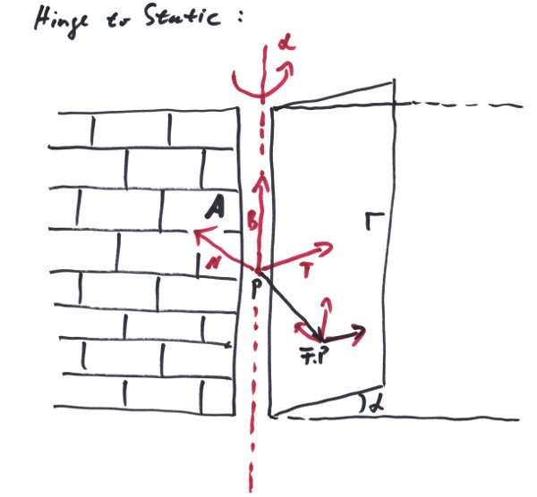

"Und wir tanzen auf dem Staub unserer Helden"
-Sondaschule
A joint is a connection between two rigid bodies or a rigid body and the static or kinematic environment, which limits their relative movement to some extent. An example would be a hinge joint that connects a door to a static wall or a bogie to a waggon. Another example can be a slider like connection, that allows a linear relative movement between two bodies, but restricts all relative rotations and the other two directions of relative linear movement. We are thinking here in terms of degrees of freedom (DOFs) that a system of n bodies has. In three dimensional space one unconfined rigid body can move in three directions, while it might rotate around an axis at the same moment. The direction of the axis gives the orientation of the rotation, its length the angular velocity; hence we have another three DOFs, making up 6 DOFs in total for one body. If we tie the body with a hinge like a door to a wall, all of the sudden, there is only one degree of freedom left. This is the turning angle around the hinge, when we open or close that door. So a hinge joint removes 5 DOFs from the body.
If we have n bodies in a system that are not connected by joints whatsoever, the DOFs of the single bodies add up to 6*n DOFs for the system in total. For example, if we connect a bogie to a waggon base by a hinge, there are l = 6*2 - 5 == 7 DOFs left for the system. These are 6 DOFs for the system to move and rotate as a whole plus the one hinge angle. A joint can remove any number of DOFs from a system (up to the total number of DOFs in the system, of course); e.g. a joint that restricts a bodies COM to some plane, but let it rotate freely would remove only one DOF from the system. We call this a constraint. So a joint might have a number m of constraints, depending of how many DOFs it removes from the system. For our hinge joint, m is 5.
How can we guarantee such a hinge joint condition in a system of rigid bodies governed by the laws or Sir Newton's dynamics? Well, in Chapter 5 we already ranted about the tautology of that method: whenever we see a body moving in some particular way, we just assume that there will be forces acting that way. We call them constraint forces fc or constraint torques Tc respectively. Actually we already used this line of thinking in Chapter5, when we removed all degrees of freedom that the single points of mass had, except of six, to build a rigid body. We did this by assuming internal forces that are just right to accomplish that feat. Let us first describe a joint between a body and its static environment in terms of the velocities [1]:
J*v + R*w == 0;
here J and R are 3 x m dimensionated matrices that will restrict the velocities in some way. For example to restrict the body to move in a plane parallel to the x/y plane, we would pick a joint with one constraint:
J = ( 0, 0, 1 ); R = ( 0, 0, 0 );
which would give vz == 0. This kind of definition allows also a description of the constraints for the accelerations (by its first derivative) which would be closely connected to our wanted constraint forces as we will see. To restrict a body to an arbitrary plane with normal vector a = { ax, ay, az }, we would pick:
J = ( ax, ay, az ); R = ( 0, 0, 0 );
which would give: a * v == 0, meaning no movement in direction 'a'. Note that to restrict the body to a specific plane that starting point of the body is significant; from the plane it once is on it can not escape during the simulation as long as the constraint holds. To restrict the movement to a line two perpendicular vectors a, b would be needed and two constraints for the joint:
J = ( ax, ay, az ) R = ( 0, 0, 0 )
( bx, by, bz ); ( 0, 0, 0 );
which would give the two equations a * v = 0 and b * v = 0, so v can only point in direction c = a % b. Note that while traveling freely into direction c, the body also is able to rotate around what axis soever. A hinge for a door can be described by an anchor Frame<Length,One> A, which gives a point A.P along the hinge axis as well as the axis direction with A.B. For the body with frame F and D = F.P - A.P we can build:
( 0, 0, 0 ) ( A.T.dx, A.T.dy, A.T.dz )
( 0, 0, 0 ) ( A.N.dx, A.N.dy, A.N.dz )
J = ( A.B.dx, A.B.dy, A.B.dz ); R = ( 0, 0, 0 );
( D.dx, D.dy, D.dz ) ( 0, 0, 0 )
( A.B % D ) ( -A.B * D² )
where we wrote the vector components with the exception of the last constraint where it was to laborious for us. The first and second constraints forbid any rotational velocities around A.T and A.N, so that the body only can rotate around A.T % A.N == A.B. This is along the same line of thinking as with the restriction of linear movement along some axis. The third constraint then says that the body can not move in the direction of the rotational axis. The fourth constraint guaranties that the distance of the body to the axis stays constant, while the last constraint puts the linear and angular movement in a relationship, saying that:
(A.B % D) * v - A.B * D² * w == 0
A.B % D * dr/dt == A.B * D² * dα/dt
A.B % D/|D| * dr == A.B * |D| * dα
This is the tangential movement of the rotation dr equals the rotation dα around A.B. Note that with D the J, R might become time dependent, so in the simulation the constraints have to be evaluated each simulation step anew.
A joint between two bodies i and j will be formulated like this [1]:
Ji*vi + Ri*wi + Jj*vj + Rj*wj == 0
Here Ji, Ri, Jj, Rj, are 3 x m dimensionated matrices that will tie the velocities of the two bodies to each other. For example, a distance joint that might get used to couple two waggons together would maintain the distance between two fixpoints on the two bodies, but will not restrict the positions and orientations of the two bodies otherwise. With r1, r2 being the centers of mass and a1, a2 being positional anchors:
Position<Length> r1, r2;
Vector<Length> a1, a2;
Vector<Length> D = (r1 + a1) - (r2 + a2);
D * dD/dt == 0; // the relative velocity in the direction of the connection has to be 0.
D * ((v1 + da1/dt) - (v2 + da2/dt)) == 0;
D * ((v1 + w1 % a1) - (v2 + w2 % a2)) == 0; // the |a| are constant, so da/dt = w % a are pure rotations.
D * v1 + D * (w1 % a1) - D * v2 - D * (w2 % a2) == 0;
D * v1 + (a1 % D) * w1 - D * v2 - (a2 % D) * w1 == 0; // using the relations for the triple product, see Chapter 3.
-> J1 = ( D ); R1 = ( a1 % D ); J2 = ( -D ); R2 = ( D % a2 );